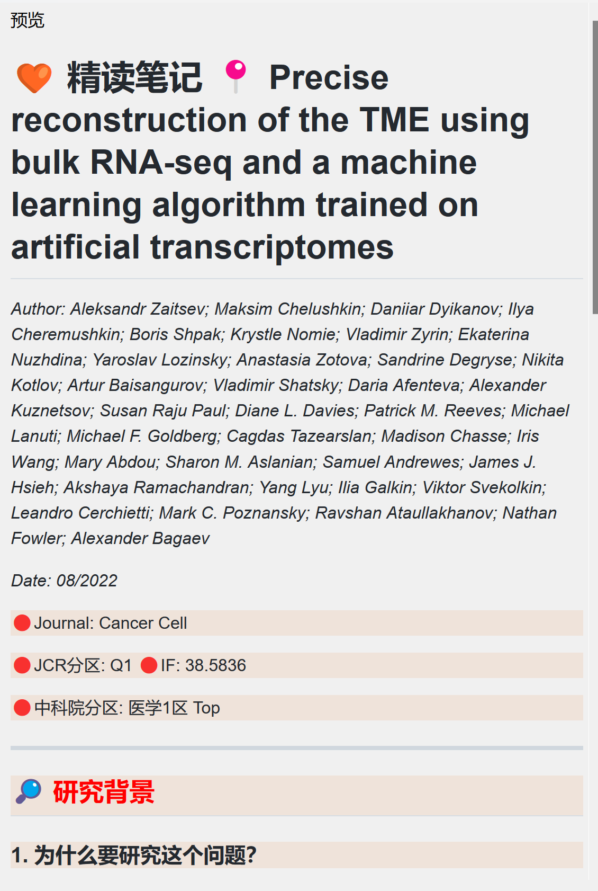
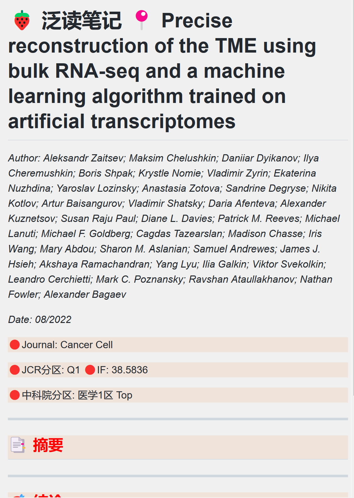

home..
总结这周重构知识体系构建方法的“折腾”
May 2023 (26 Words, 1 Minutes)
technologies
learning
Table of contents
这周源于在B站上刷到一个zotero的插件视频，加之五一期间倒腾完blog就想要在开题之前一遍优化下自己现有的工作/学习流，于是开启了zotero, obsidian, jupyterf重新配置，给自己构建了一个新的学习笔记模式，为避免日后换设备，或者其他情况需要重新配置花时间回忆，写这篇文章把用到的插件，教程资源，加之目前的配置和使用情况记录于此。
zotero配置
zotero所使用插件及资源
- Tara: 备份插件
- ZotCard: 做一些碎片化的笔记非常方便
- Zotero Better Notes: 笔记神器，特别是笔记链接功能，且有非常多模板可以学习
- Sci-Hub Plugin for Zotero : 文献下载神器，结合connector插件，在Google浏览器上可以直接将打开的pubMed文献界面文献元数据抓到zotero，然后从sci-hub抓取原文
- Zotero Reference: 装了sci-hub插件之后，用这个插件可以直接抓取在读文献的参考文献原文
- Zotero PDF Translate: 当选取文献文本时翻译选取内容，并且可以设置插入笔记的内容自带翻译，快速浏览文章的时候非常方便
- Zotero Style: 个人非常喜欢这款插件，让文献阅读变得有趣
-
Reading List for Zotero: 标记文章阅读状态，跟style的功能有重叠 - Better BibTex for Zotero: 这个插件没探索，主要是为了跟zotero联动装的
这些工具相关资源
- ZotCard 和 Zotero better notes
- Zotero Style
配置
这里说的只是我个人配置，可以根据自己需求进行配置。大部分不需要单独配置，主要就Zotero Style, zotcart 和 zotero better notes需要配置
另外，因为之前一直也是用的Zotero, 还是有初始配置的，关联坚果云同步文献，Google浏览器对应插件以及word插参考文献插件已经配置好了的，这里就不在写了，如果刚开始使用，建议先网上找教程配置这些，特别是坚果云同步，避免文献储存多了之后配置麻烦- Zotero Style
- 标签图标（用zotero自带的颜色标签也行，换成图标主要为了让自己开心，得用markdown图标替换，1-9快捷键设置）
- 🎯: 正中靶心，这篇文章跟目前研究主题非常相关
- 💧: 湿实验文章
- 🌞: 干实验文章
- 🧬: 实验方法
- 🧰: 工具开发的文章
- 💾: 数据资源可用文章
- 💡: 有所启发的文章
- ⏳: 要仔细阅读的文章（沙漏说明需要花时间精读）
- ❌: 不精读或者暂缓精读的文章
- 另有# 标签栏，且右击可以设置正则匹配符号，默认是# 号，这个标签可以嵌套使用，非常方便
- 可以分不同视图显示，这个功能我也很喜欢，配置了3个视图（标签，阅读，信息），其他显示颜色之类的都是右击表头设置，全都可调，这个插件的github上还有非常都教程可以参考
- 标签图标（用zotero自带的颜色标签也行，换成图标主要为了让自己开心，得用markdown图标替换，1-9快捷键设置）
- ZotCard 和 Zotero better notes的配置上面放的几个视频已经解释的非常好了，主要是根据自己需求配置模板，目前直接用的B站评论去推荐的精读，泛读，单词短语积累的模板，插件和所用模板百度网盘链接：
链接：https://pan.baidu.com/s/1Wl0kt48tARNKFCcdNOhaHQ 提取码：gu9p


这些模板能在阅读文献的时候提供提示词，在阅读过程中填这些内容的时候能够主动去思考这些问题，读完文献，填完这些内容有成就感
obsidian配置
Obsidian目前用的不是特别熟悉，目前比较主要喜欢日待办清单，看板以及跟Zotero联动，基本替代typora写markdown。先记录一下目前装的插件，以及一些教程资源。
目前所用插件
- Advanced Slides：用markdown做PPT
- Advanced Tables：方便写markdown表格
- Calendar：显示日历
- cMenu
- Dataview
- Day Planner：设置日清单
- Excalidraw
- Journey
- Juggl
- Kanban：设置看板
- Mind Map：文档大纲可以可视化为思维导图
- QuickAdd
- Templater：设置不同文件夹下新建文档的模板
- Zotero Integration：Zotero联动的插件 obsidian的插件基本都可以在设置里面的第三方插件>浏览里面直接搜索安装，可以直接连接到的说明文档，进行学习